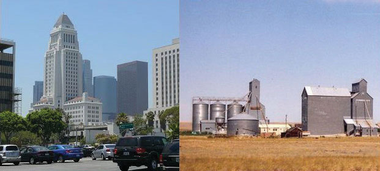
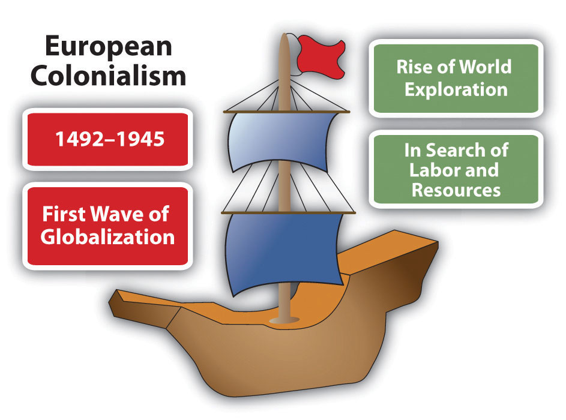
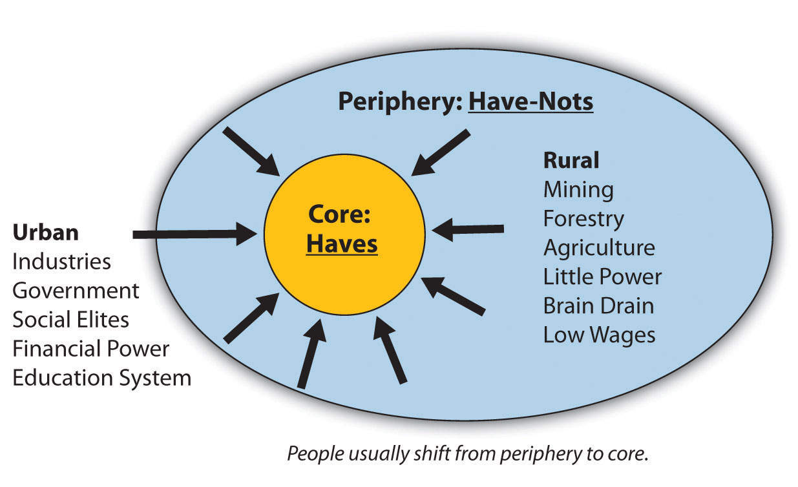
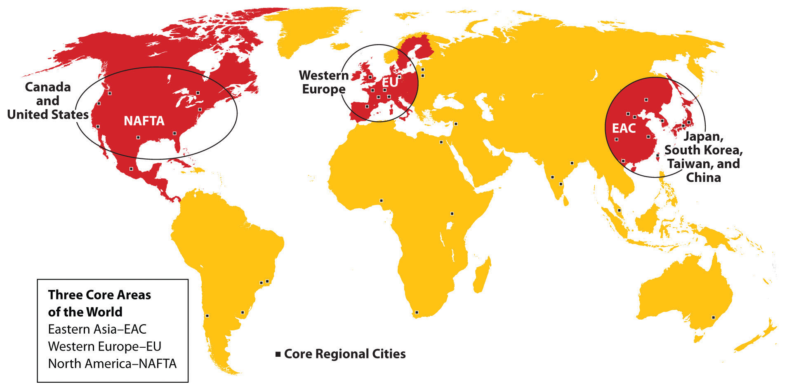
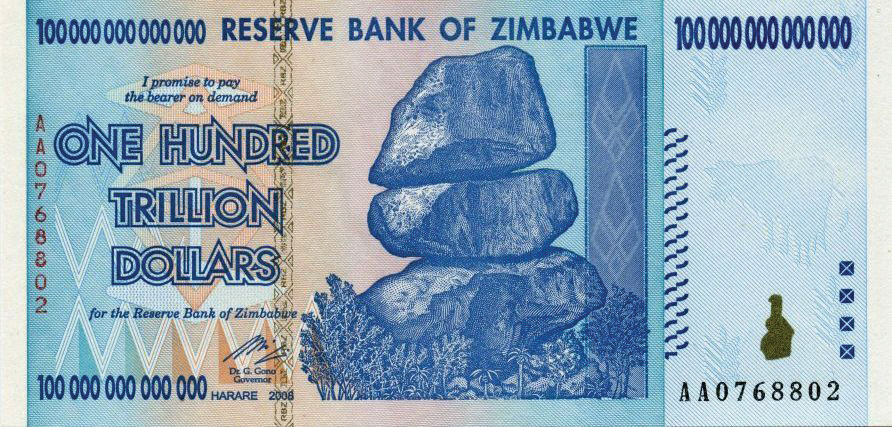
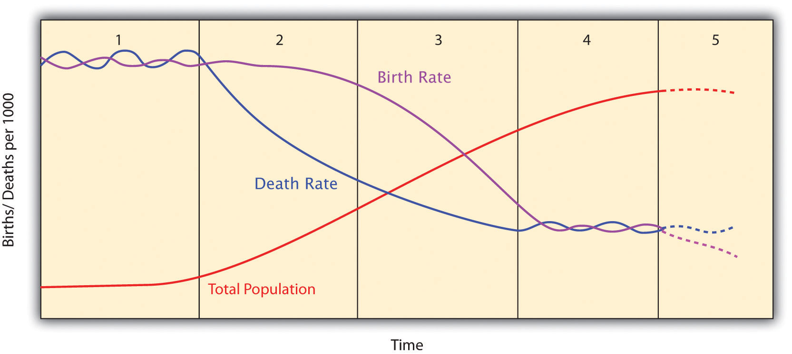
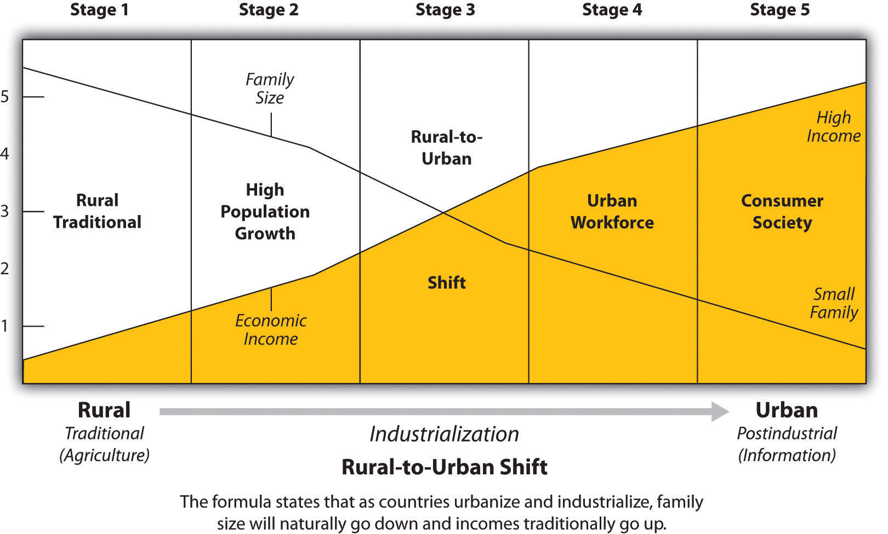

Figure 1.29 Cultural Landscapes Representing the Urban Core Region of Los Angeles and the Peripheral Regions of Rural Montana
The tall structures shown in Montana are grain elevators used to store grain of local farmers before loading it into railroad cars to be shipped to market.
Source: Photos by R. Berglee.
US President George H. W. Bush gave a speech during his presidency (1988–92) indicating the real possibility of a New World OrderTerm used by US President George H. W. Bush in a speech in the early 1990s to address the actions of the Persian Gulf War to remove Saddam Hussein from Kuwait.. The speech, given during the Persian Gulf War when Iraq occupied Kuwait, was quite surprising to many, and it created questions about what he meant. Geographers and professionals in other disciplines understand that the world is not static. Cultural forces continue to act on human activities as globalization creates new alliances and global networks. The goal is to understand globalization and to make sense of what is happening. The better we understand the world and human dynamics, the better we will be prepared to address the changes that are occurring. Geography provides a means to spatially examine these changes.
GlobalizationThe integration of networks or systems between multiple countries that creates exchanges or interdependencies between participating entities. is a process with a long history. People have been exploring, migrating, and trading with each other throughout human history, and these activities have created interactive networks connecting the different parts of the planet and producing dependent economic relationships. In modern times, globalization can be recognized by noting iconic global corporations, such as Walmart, McDonald’s, or Toyota, that trade across international borders and integrate labor and resources from different countries to sell a product or service in the global marketplace. In a number of countries, people have protested against the building of new Walmarts or McDonalds’, and such protests exemplify concerns about globalization and the growing expansion of dominant global economic units into local communities. These ubiquitous corporations represent corporate interests that are primarily concerned with company profits. Global corporations tend to view countries or communities as either markets for their products or sources of labor or raw materials. Globalization can seriously impact local communities for better or for worse, depending on local circumstances. The main force that encourages globalization is economic activity based on technological advancements. Cultural and societal changes often occur as a consequence and are no less significant.
Political geography examines geography’s influence on political systems and globalization, which are related to issues concerning the development of borders and the distribution of government types. One of the most significant events in political geography was colonialismThe development of colonies outside the home country, usually for economic gain or expansion of the empire., which is connected to the development of capitalism. Eric Wolf, in his book Europe and the People without History, details the expansion of European powers throughout the world to control both human and natural resources as well as expand a country’s world power and promote Christianity. The British parliamentary system of government was exported to various areas of the British Empire. Now the parliamentary system is used throughout the world in former British colonies and throughout the British Commonwealth. Additionally, colonialism helped spread the English language throughout the world, for example, to India and the United States.
European colonialism was an early wave of globalization that changed the planet and shaped most of the world’s current political borders. This early wave of global conquest was fueled by the Industrial Revolution. Colonialism transferred technology, food products, and ideas around the globe in merchant ships that centered on the European power bases of the colonial empires of Europe—mainly Britain, Spain, France, Portugal, and the Netherlands. When the United States became independent of these European colonial powers, it began to extend its power and influence around the world. Thus the first major wave of globalization was a result of European colonialism.
Figure 1.30
European colonialism changed many things. The expansion of European empires was driven by the search for profits from resources and labor in the acquisition of new lands. European colonialism had a significant impact on people and cultures.
The space race and the information ageOften referred to as the space age or the age of computers and usually marked by the successful 1957 Earth orbit of the Soviet space craft Sputnik. The information age took off in the 1990s, which coincided with the collapse of the Soviet Union and the end of the Cold War. of the latter portion of the twentieth century initiated a second major wave of globalization. The space race was a competition between the United States and the Soviet Union to develop space-related technologies, including satellites, and to land on the moon. The end of the Cold War, with the collapse of the Soviet Union in 1991, coincided with advancements in computer technology that fueled the second major wave in modern globalization. Technology and corporate activity have stimulated a wave of globalization that is impacting the economies of countries around the world. In European colonialism, the land and people were physically conquered by the mother country and became colonies ruled by the European colonizer’s government. Great Britain was the most avid colonizer and amassed great fortunes through its colonial possessions. One difference between European colonialism and globalization today is that globally active multinational corporations do not wish to own the country or run the government directly. Corporations are not concerned with what government type is in power or who is running the country as long as they can operate and make a profit. This neocolonialismThe ability of powerful countries to economically exploit the labor and resources of weaker countries without taking political control. This activity is usually accomplished at the corporate level (see corporate colonialism). (new colonialism or corporate colonialismNeocolonialism as it applies to the power of multinational corporations to exploit the labor and resources of a country without taking responsibility for its physical control.), like European colonialism, continues to exploit natural resources, labor, and markets for economic profits. Its critics claim that corporate colonialism is nothing more than a legal method of pillaging and plundering, and its supporters claim it is the most efficient use of labor and resources to supply the world with the lowest-priced products.
Figure 1.31
After the turn of the twenty-first century, Walmart became the world’s largest corporation. Its global expansion and economic relationships are good examples of the activities of corporate colonialism.
Source: Photo courtesy of Walmart Stores, http://www.flickr.com/photos/walmartcorporate/5266815680.
Examples of corporate colonialism can be seen in the trade relationships between the United States and places such as Mexico and China. US corporations move their manufacturing plants to Mexico to earn more profits by exploiting cheap labor. The corporations do not take over Mexico politically; they exploit it economically. The many US corporations that have started manufacturing their products in China do not attempt to overthrow the Communist Chinese government; they want to exploit the cheap Chinese labor pool and open up markets to sell products to Chinese consumers. Desire for profits drives corporate colonialism.
Considering the drive of individuals to increase their opportunities or advantages is one way to understand our world. People who have access to opportunities and advantages can generally achieve a higher standard of living than people without. This can be true for individuals, global corporations, or whole countries. Countries that have an opportunity or an advantage over others can achieve a higher standard of living for their people, and countries without such opportunities or advantages will struggle in a global economy. A country’s opportunities and advantages can be determined by various factors, such as the amounts of available natural or human resources, arable land for farming, forests for timber, and freshwater for fishing or a specific location that provides a greater access to the world markets. Examples of human resources are a large labor pool or a high percentage of educated professionals. Individuals seek to gain opportunities or advantages by increasing their education, learning new skills that can translate into higher earning power, or migrating to a place with improved employment prospects.
Rural-to-urban shiftTrend that occurs when people migrate from a rural to an urban part of the same region in search of opportunities or advantages. occurs when people move from rural agricultural areas to the cities for employment or in search of a better life and is an example of a migration pattern based on people seeking greater opportunities or advantages. When people migrate from a poorer country to a postindustrial country, they are seeking opportunities or advantages in life. The “have” countries are those with opportunities and advantages; the “have-not” countries are those with fewer opportunities and advantages for their people or for their country’s future. Migration patterns around the world usually shift people from places without resources to places with resources. These migration patterns, which are evident in rural-to-urban shift and periphery-to-core migration, allow individuals to seek a greater opportunities or advantages for the future.
Economic conditions vary across the globe. There are wealthy countries and there are poor countries, and the determination of which countries are wealthy and which countries are poor has generally been determined by the availability of economic opportunities and advantages. There are three core areas of wealthy industrialized countries, all of which are found in the Northern Hemisphere: North America, Western Europe, and eastern Asia. The main market centers of these regions are New York City, London, and Tokyo. These three core areas and their prosperous neighbors make up the centers of economic activity that drive the global economy. Other wealthy countries can be found dispersed in regions with large amounts of natural resources, such as the Middle East, or places of strategic location, such as Singapore. The world’s poorer countries make up the peripheral countries. A few countries share qualities of both and may be called semiperipheries.
The periphery countries and the core countries each have unique characteristics. Peripheral locations are providers of raw materials and agricultural products. In the periphery, more people earn their living in occupations related to securing resources: farming, mining, or harvesting forest products. For the workers in these occupations, the profits tend to be marginal with fewer opportunities to advance. In the periphery, there is a condition known as brain drainThe loss of educated people or professionals from a peripheral area who move to a core area., which describes a loss of educated or professional individuals. Young people leave the peripheral areas for the cities to earn an education or to find more advantageous employment. Few of these individuals return to the periphery to share their knowledge or success with their former community.
Brain drain also happens on an international level—that is, students from periphery countries might go to college in core countries, such as the United States or countries in Europe. Many international college graduates do not return to their poorer countries of origin but instead choose to stay in the core country because of the employment opportunities. This is especially true in the medical field. There is little political power in the periphery; centers of political power are almost always located in the core areas or at least dominated by the core cities. The core areas pull in people, skills, and wealth from the periphery. Lack of opportunities in the periphery pushes people to relocate to the core.
Power, wealth, and opportunity have traditionally been centered in the core areas of the world. These locations are urbanized and industrialized and hold immense economic and political power. Ideas, technology, and cultural activity thrive in these core areas. Political power is held in the hands of movers and shakers who inhabit the core. The core depends on the periphery for raw materials, food, and cheap labor, and the periphery depends on the core for manufactured goods, services, and governmental support.
Figure 1.32 The Core-Periphery Spatial Relationship
The core-periphery spatial relationshipRelationship between the urban core areas, which hold the economic, political, educational, cultural, and industrial power, and the rural peripheral regions, which make their living off the land and provide food and raw materials to the core but have little power over the markets where these goods are sold. can be viewed on various levels. On a local level, one can select eastern Kentucky, with the city of Morehead as an example. Morehead has a population of about ten thousand people and is the only significant town in its county. Morehead, with a university, regional hospital and retail services, serves as a core hub for the surrounding periphery. The hinterland of Morehead has an economy based on agriculture, coal mining, and timber, which is typical of a peripheral region. The city of Morehead has the political, economic, and educational power that serves the people of its local area.
If we move up a level, we can understand that entire regions of the United States can be identified as peripheral areas: the agricultural Midwest, rural Appalachia, and the mountain ranges and basins of the western United States. The large metropolitan areas of the East and West Coasts and the Industrial Belt act as the core areas. Los Angeles and New York City anchor each coast, and cities such as Chicago, St. Louis, Denver, and Indianapolis represent the heartland. All the other large cities in the United States act as core areas for their surrounding peripheral hinterlands. Southern cities such as Atlanta, Memphis, Dallas, or Phoenix act as core centers of commerce for the South in a region known as the Sun Belt.
Figure 1.33 Three Core Economic Areas of the World: North American Free Trade Agreement (NAFTA); the European Union (EU); and the East Asian Community (EAC)
EAC is not an “official” organization but is a recognized economic group.
On a global scale, we can understand why North America, Western Europe, and eastern Asia represent the three main economic core areas of the world. They all possess the most advanced technology and the greatest economic resources. Core regions control the corporate markets that energize and fuel global activity. Peripheral regions include portions of Africa, Asia, Latin America, and all the other places that primarily make their living from local resources and support the economic core. These peripheral regions may include key port cities. A semiperiphery would be a transitional area between the core and the periphery, which could include countries such as Russia, India, or Brazil that are not exactly in the core and not really in the periphery but might have qualities of both. World migration patterns follow the core-periphery spatial relationship in that people and wealth usually shift from the peripheral rural regions to the urban core regions. The “have” countries of the world are in the core regions, while the “have-not” countries are most likely in the peripheral regions.
It is easier to understand why people move from rural to urban, from periphery to core, from Mexico to the United States when one begins to understand the global economy. Economic conditions are connected to how countries gain national income, opportunities, and advantages. One way of gaining wealth is simply by taking someone else’s wealth. This method has been common practice throughout human history: a group of armed individuals attacks another group and takes their possessions or resources. This is regularly practiced through warfare. Unfortunately, this pillage-and-plunder type of activity has been a standard way of gaining wealth throughout human history. The taking of resources by force or by war is frowned upon today by the global economic community, though it still occurs. The art of piracy, for example, is still practiced on the high seas in various places around the globe, particularly off the coast of Somalia.
The main methods countries use to gain national income are based on sustainable national income models and value-added principles. The traditional three areas of agriculture, extraction/mining, and manufacturing are a result of primary and secondary economic activities. Natural resources, agriculture, and manufacturing have been traditionally targeted as the means to gain national income. Postindustrial activities in the service sector would include tertiary and quaternary economic activities, which make up a large part of a nation’s economy but might not hold the same value-added quotient for national income as the traditional three areas.
Agriculture is the method of growing crops or trees or raising livestock that provides food and some raw materials. The excess is usually sold for profits. This is a renewable method of gaining wealth, as long as conditions are favorable. Profits for agricultural products might be low because of global competition. Countries with minerals, oil, or other natural resources can earn income from the extraction and sale of those items. Saudi Arabia and other countries with abundant petroleum reserves can gain wealth by selling that resource to other countries. Since these resources are not renewable, once the minerals or oil run out, the country must turn to other activities to gain national income.
Places around the world have sometimes been named after the methods used to gain wealth. For example, the Gold Coast of western Africa received its label because of the abundance of gold in the region. The term breadbasket often refers to a region with abundant agricultural surpluses. Another example is the Champagne region of France, which has become synonymous with the beverage made from the grapes grown there. Banana republics earned their name because their large fruit plantations were the main income source for the large corporations that operated them. Places such as Copper Canyon and Silver City are examples of towns, cities, or regions named after the natural resources found there. The United States had its Manufacturing Belt, referring to the region from Boston to St. Louis, which was the core industrial region that generated wealth through heavy manufacturing for the greater part of nineteenth and twentieth centuries
Manufacturing has offered the industrialized world the opportunity for the greatest value-added profits. From the beginning of the Industrial Revolution, solid profits have been made by turning raw materials into useable products that can be mass-produced and sold in high quantities. The core areas of the world have all made enormous wealth from manufacturing profits. Today, information technology and high-tech manufactured products generate substantial wealth. The Microsoft Corporation manufactures information by placing data in the form of computer programs on inexpensive disks or in digital files that are then sold at a profit to a world computer market. The geographic region of California south of San Francisco was labeled Silicon Valley after this type of information-generating activity.
For a country to gain national wealth, income must be brought in from outside the country or be generated from within. Other than the big-three methods of agriculture, extraction/mining, and manufacturing, there are additional ways a country can gain wealth, such as through tourism and services. Postindustrial economic activities (the service sector) contribute to a large percentage of employment opportunities in industrialized countries and generate a large percentage of their national economies. However, the service sector does not have the high value-added profits traditionally provided by the manufacturing sector. In the gaming industry, for example, casinos do not have a large wealth-generating potential for the country unless they can either attract gamblers from other countries or provide for other wealth-generating services. Gambling shifts wealth from one person to another and provides little national income. The activity of gambling does, however, generate service jobs for the gaming industry.
Countries with few opportunities to gain wealth to support their governments often borrow money to provide services for their people. National debt is a major problem for national governments. National income can be consolidated into the hands of a minority of the population at the top of the socioeconomic strata. These social elites have the ability to dominate the politics of their countries or regions. The elites may hold most of a country’s wealth, while at the same time their government might not always have enough revenues to pay for public services. To pay for public services, the government might need to borrow money, which then increases that country’s national debt. The government could have a high national debt even when the country is home to a large number of wealthy citizens or a growing economy. Taxes are a standard method for governments to collect revenue. If economic conditions decline, the amount of taxes collected can also decline, which could leave the government in a shortfall. Again, the government might borrow money to continue operating and to provide the same level of services. Political corruption and the mismanagement of funds can also cause a country’s government to lack revenues to pay for the services it needs to provide its citizens.
Figure 1.35 Inflationary Banknote from Zimbabwe—Considered the Largest Denomination Banknote Ever Printed for Legal Tender
National debtThe amount of money owed by a country’s government., defined as the total amount of money a government owes, is a growing concern across the globe. Many governments have problems paying their national debt or even the interest on their national debt. Governments whose debt has surpassed their ability to pay have often inflated their currency to increase the amount of money in circulation, a practice that can lead to hyperinflation and eventually the collapse of the government’s currency, which could have serious negative effects on the country’s economy. In contrast to the national debt, the term budget deficit refers to the annual cycle of accounting of a government’s excess spending over the amount of revenues it takes in during a given fiscal year.
The Industrial Revolution, which prompted the shift in population from rural to urban, also encouraged market economies, which have evolved into modern consumer societies. Various theories and models have been developed over the years to help explain these changes. For example, in 1929, the American demographer Warren Thompson developed the demographic transition model (DTM) to explain population growth based on an interpretation of demographic history. A revised version of Thomson’s model outlines five stages of demographic transition, from traditional rural societies to modern urban societies:
Figure 1.36 The Five Stages of the Demographic Transition Model
In the 1960s, economist Walt Rostow outlined a pattern of economic development that has become one model for growth in a global economy. Rostow’s model outlined the five stages of growth in the economic modernization of a country:
The human development index (HDI) was developed in 1990 and used by the United Nations Development Program to measure a standard of human development, which refers to the widening opportunities available to individuals for education, health care, income, and employment. The HDI incorporates variables such as standards of living, literacy rate, and life expectancy to indicate a measure of well-being or the quality of life for a specific country. The HDI is used as an indicator of a country’s economic and technological development.
The basic principles of Rostow’s DTM and the HDI can be illustrated in a general index for understanding development. Two variables of the DTM’s correlating five stages are family size and economic income, which can illustrate the population pattern or development potential. All countries of the world are at one of the five stages. The general index addresses how population growth rates relate to rural-to-urban shift, which has traditionally been a result of industrialization. By tracking both family size and economic conditions, a pattern of population growth and economic development can be illustrated and more clearly understood.
Fertility rate is often defined as the number of children born to a woman in her lifetime, regardless of whether they all live to adulthood. Fertility rate may (or may not) vary from family size, which is an indication of the number of living children raised by a parent or parents in the same household. A high infant mortality rate may account for a fertility rate that is greater than family size. To simplify the understanding, family size is used in this textbook to illustrate economic dynamics. Though the statistical data may vary slightly between the two terms, this should not present any problem in understanding basic patterns of development.
As a general trend, when a country experiences increasing levels of industrial activity and greater urban growth, the outcome is usually a higher standard of living for its people. Additionally, rural-to-urban shift takes place, driven by the pull of opportunities and advantages in the industrializing and urbanizing areas. Though there are exceptions, a decrease in family size usually coincides with a higher level of urbanization. There are cases in which only core regions within a country transition through the five development stages without the peripheral regions experiencing the coinciding levels of economic benefit. The five stages of the index of economic developmentFive-stage model that illustrates the transition of a country from a rural society with large families to an urban society with small families and a consumer lifestyle. assist in illustrating these general patterns.
Stage 1 indicates traditional rural societies, which are usually based on agriculture and not as dependent on the outside world. Stage 1 families are larger, their income levels are low, and their advantages and economic development opportunities are low. Health care, education, and social services are in short supply or nonexistent. High birth and death rates maintain a high fertility rate/family size and a low population-growth status. Populations in stage 1 development have a stationary population pyramid. Though there may be regions of the world that exhibit stage 1 development patterns, few if any entire countries fall into this category as of the year 2000.
Stage 2 countries experience high population growth rates because family size remains high but modern medicine or improved nutrition allows people to live longer, which lowers the death rate. Population is exploding in countries in stage 2. During this stage, young people from rural areas often migrate to the cities looking for employment. Rural stage 2 regions are starting to urbanize and integrate their economic activities with the outside world. Regions in stage 2 often have a surplus of cheap labor. Income levels remain low and family size continues to be large. Countries in this stage often have a rapidly expanding population pyramid.
Societies that have made business connections that provide for manufacturing of products, industrial activities, or an increased service sector might progress to stage 3, the rural-to-urban shift stage. These regions are experiencing a high rate of rural-to-urban shift in their populations. These regions are often targeted by multinational corporations for their labor supply, and as people migrate from rural areas to the cities looking for employment, urban populations grow and core or central cities experience high rates of self-constructed housing (slums). Income levels start to increase and family size starts to drop significantly. Stage 3 countries have an expanding population pyramid.
Societies that have urbanized and industrialized and are members of the global marketplace might enter stage 4. Members of an urban workforce assist in building a networked economy. Family size is lower as urban women enter the workforce and have fewer children. Health care, education, and social services become increasingly available, and income levels continue to rise. In stage 4, there is typically a high level of growth in the industrial and service sectors with a great need for infrastructure in the form of transportation, housing, and human services. Countries in stage 4 development have populations that resemble a stationary population pyramid.
As incomes increase and family size decreases, a consumer societyAn economy fueled by a high level of consumption and spending where the population is dominated by higher incomes and smaller family sizes. emerges, creating stage 5, where high mass consumption can drive the economy. Many countries in stage 5 can eventually experience a negative population growth rate in which the fertility rate (family size) is below replacement levels (statistically around 2.1 children). With a low number of young people entering the workforce, stage 5 regions become an attractive magnet for people looking for opportunities and advantages in the job market. Illegal immigration might become an issue. Europe and the United States are now experiencing this condition. Japan has the same low family size, but because of their island location and strict laws, they have a different set of illegal immigration issues compared with Europe or the United States. Populations in stage 5 development have a contracting population pyramid.
Figure 1.37 Index of Economic Development
The four basic shapes of population pyramids can parallel the various stages of a country’s economic development. Many of the concepts used in this textbook are interrelated. The various methods, models, or theories used in geography are often used by other disciplines as well. Understanding one concept usually assists the reader in learning about the other concepts and how they apply to different geographic locations. In this case, the stages of economic development and the population pyramids illustrate the contrast between rural and urban societies and the changes in family size during the industrialization process.
Highly industrialized countries in Western Europe, eastern Asia, or North America can offer more economic opportunities compared with developing countries. The push-pull factors that push people out of poorer countries and pull them to an industrialized country are strong. Portions of the population of countries in the earlier stages of the index of economic development often migrate to countries in the latter stages of the index looking for work and other opportunities. This transition has created a dichotomy between people who have opportunities and advantages and those who do not. People who do not have opportunities and advantages often want to move to places that do have them so they can work to attain greater economic security for themselves and their families. The haves and have-notsThose who have opportunities and advantages and those who do not. are general categories of economic status and not necessarily cultural values.
Countries in stage 4 or 5 of the index of economic development are often attractive places for those seeking greater economic opportunities or advantages. Populations in these stages generally have fewer children, so the demand for entry-level workers is often higher. Immigrants with fewer skills take the entry-level jobs to enter the economic workforce. An established country with a long-standing history and culture does not always welcome an influx of new immigrants. The arrival of an immigrant labor pool often includes individuals who hold different cultural traditions or customs than those of the mainstream society. Social tensions arise if different ethnic groups are vying for the same cultural spaces and opportunities. One example is the large number of people entering the United States across its southern border. Europe is experiencing a similar immigration issue, with immigrants from North Africa, the Middle East, and former colonies. Japan, on the other hand, has taken pride in holding on to its ubiquitous Japanese culture but is facing the same employment situation.
The following information on careers in geography is from the website of the Association of American Geographers (AAG), which is a resource for those interested in pursuing employment in the field of geography (http://www.aag.org).
Many occupations require knowledge of and skills in geography. Geographers work in many different areas, such as environmental management, education, disaster response, city and county planning, community development, and more. Geography is an interdisciplinary field that offers diverse career opportunities.
Many geographers pursue rewarding careers in business; local, state, or federal government agencies; nonprofit organizations; and schools. Geographers with graduate (master’s and doctorate) degrees may become educators in higher education (community colleges and universities).
Using information from the US Department of Labor, the AAG has compiled data on a broad list of occupations related to geography. Using this online career database, you can explore the diverse career opportunities available to geographers, as well as retrieve data on salaries, projected growth, demand for key skills, and much more to guide your career planning. Occupations can be found at the following site: http://www.aag.org/cs/salary_data_and_trends/salary_data_and_trends_overview.